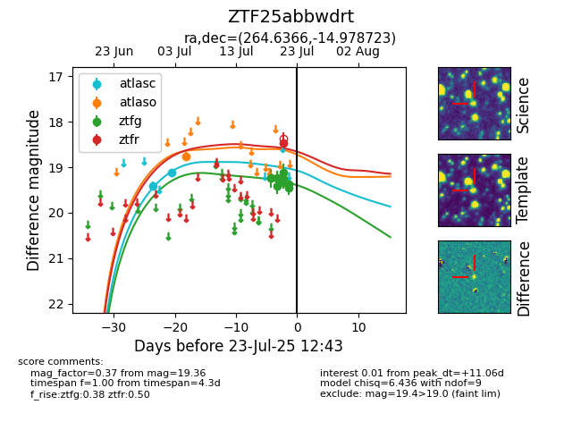

Target ZTF25abbwdrt at 2025-07-23 12:43, see:
FINK: fink-portal.org/ZTF25abbwdrt
Lasair: lasair-ztf.lsst.ac.uk/objects/ZTF25abbwdrt
ALeRCE: alerce.online/object/ZTF25abbwdrt
alt names
ZTF25abbwdrt (ztf,fink)
coordinates:
equatorial (ra, dec) = (264.6366,-14.97872)
galactic (l, b) = (11.0904,+8.68498)
photometry
last atlasc=19.11, atlaso=18.76, ztfg=19.36, ztfr=18.48
2 atlasc, 1 atlaso, 9 ztfg, 1 ztfr detections
